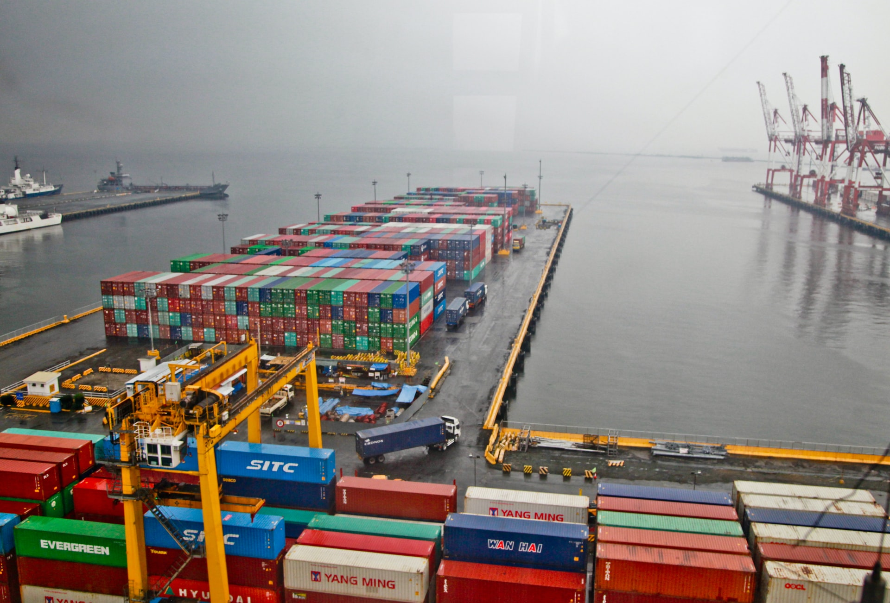

America’s trucking industry is the bloodline of the U.S. economy. Nearly 71% of all freight tonnage in America moves on the back of trucks. Moving 11 billion tons of freight annually requires more than 3.6 million heavy-duty Class 8 trucks and over 3.5 million professional truck drivers. Without our industry, the American economy would come to a halt. By contrast, rail transportation accounts for about 13 percent of the nation’s freight tonnage, goods using multiple modes of transportation - rail, ship, and truck. Freight is loaded in an intermodal container which enables movement across the various modes, reduces cargo handling, improves security and reduces freight damage and loss.
There are many types of truck freight, each with a unique yet important role for moving diverse truck freight across the nation. There are four major types of freight transportation available for shippers to use in the world of freight shipping. The primary ones are by ground (road), rail, ocean, and air. Although these are the main categories of freight transportation, each method has their own processes that differ from one another. Companies ship a variety of truck freight ranging in size, value, and contents. It’s all thanks to trucking, for the dedicated men and women of the trucking industry to haul the freight.